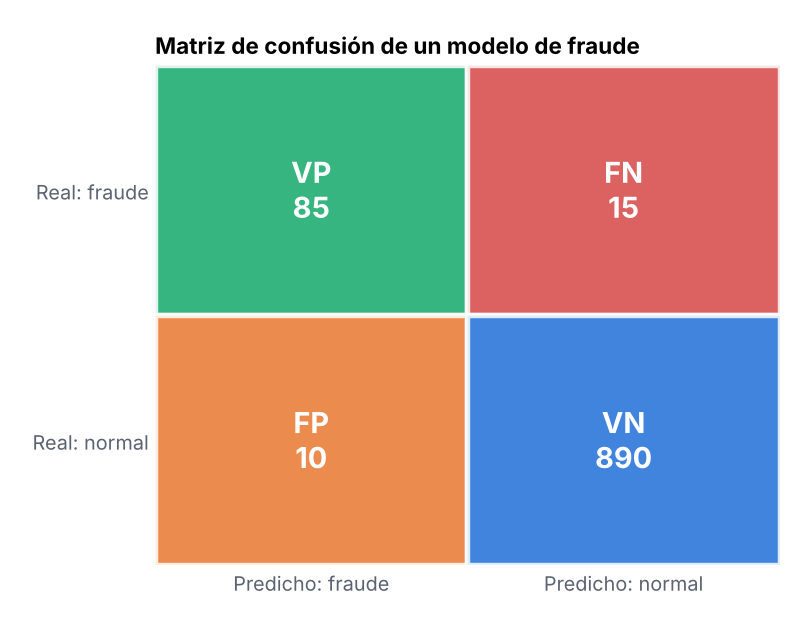
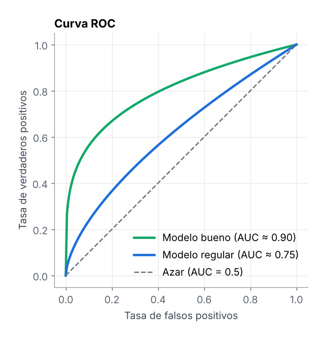
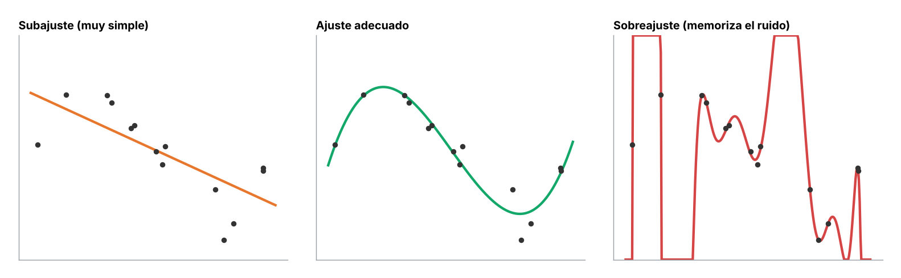

Aprender los tipos de datos es importante porque permite identificar cómo se organizan, almacenan y analizan los datos dentro de un sistema o análisis. Comprender si los datos son numéricos, categóricos, estructurados o no estructurados ayuda a elegir las herramientas, algoritmos y métodos de análisis adecuados. Además, facilita el procesamiento correcto de la información, mejora la calidad del análisis y permite obtener resultados más precisos en proyectos de estadística, ciencia de datos e inteligencia artificial.
| Concepto | Descripción simple | Ejemplo |
|---|---|---|
| Algoritmos | Conjunto de instrucciones paso a paso que permiten resolver un problema o realizar una tarea. | Un algoritmo que clasifica correos electrónicos como spam o no spam. |
| Modelo | Representación matemática que aprende patrones en los datos para hacer predicciones. | Modelo de regresión que predice el precio de una vivienda. |
| Afloramientos (Outliers) | Datos que son muy diferentes al resto del conjunto y pueden indicar anomalías. | Ventas diarias de 100 unidades y un día aparece 1000. |
| Análisis cuantitativo | Análisis basado en datos numéricos usando matemáticas y estadística. | Calcular promedio de ventas o correlación entre variables. |
| Análisis cualitativo | Análisis basado en características descriptivas o categóricas. | Opiniones de clientes, comentarios o encuestas de satisfacción. |
| Datos estructurados | Datos organizados en tablas con filas y columnas. | Bases de datos SQL, archivos CSV o JSON. |
| Datos no estructurados | Datos que no siguen una estructura fija de tabla. | Imágenes médicas, videos o texto de redes sociales. |
Antes de construir un modelo de inteligencia artificial es fundamental entender cómo se representan los datos (vectores, matrices o secuencias) y qué tipo de algoritmo corresponde al problema. La IA no funciona directamente con texto, imágenes o números “tal como los vemos”, sino que los transforma en estructuras matemáticas que los modelos pueden procesar.
Conocer los tipos de aprendizaje (supervisado, no supervisado, deep learning o generativo) permite seleccionar el algoritmo adecuado según el objetivo del problema, ya sea clasificación, predicción, clustering o generación de datos.
Por esta razón, comprender la representación matemática de los datos y los principales algoritmos de machine learning es un paso esencial antes de desarrollar sistemas de inteligencia artificial en producción.
| Tipo de Aprendizaje | Algoritmo | Entrada (Representación Matemática) | Arquitectura / Modelo | Uso | Ejemplos |
|---|---|---|---|---|---|
| Supervisado | Regresión Lineal |
Vector de características (x₁, x₂, x₃, ..., xₙ) |
Modelo lineal | Regresión |
Predicción de precios Pronóstico de ventas Estimación de demanda |
| Supervisado | Regresión Logística |
Vector (x₁, x₂, x₃, ..., xₙ) |
Modelo probabilístico | Clasificación |
Fraude bancario Diagnóstico médico Clasificación de clientes |
| Supervisado | SVM |
Vector (x₁, x₂, ..., xₙ) |
Máquinas de soporte vectorial | Clasificación / Regresión |
Clasificación de texto Reconocimiento facial Detección de spam |
| Supervisado | Random Forest |
Vector (x₁, x₂, ..., xₙ) |
Ensamble de árboles | Clasificación / Regresión |
Predicción de churn Evaluación de riesgo Detección de fraude |
| Supervisado | XGBoost |
Vector tabular (x₁, x₂, ..., xₙ) |
Gradient Boosting Trees | Clasificación / Regresión |
Riesgo crediticio Predicción de churn Forecast de ventas |
| Supervisado | LightGBM |
Vector tabular (x₁, x₂, ..., xₙ) |
Gradient Boosting optimizado | Clasificación / Regresión |
Sistemas de recomendación Predicción de ventas Scoring crediticio |
| No Supervisado | K-Means |
Matriz de vectores (x₁₁, x₁₂, ..., x₁ₙ) (x₂₁, x₂₂, ..., x₂ₙ) ... (xₘ₁, xₘ₂, ..., xₘₙ) |
Clustering | Segmentación |
Segmentación de clientes Agrupación de productos Análisis de comportamiento |
| Deep Learning | Perceptrón Multicapa (MLP) |
Vector (x₁, x₂, x₃, ..., xₙ) |
Red neuronal densa | Clasificación / Regresión |
Predicción financiera Scoring crediticio Predicción de churn |
| Deep Learning | CNN |
Matriz / Tensor (x₁₁, x₁₂, ..., x₁N) (x₂₁, x₂₂, ..., x₂N) ... (xM₁, xM₂, ..., xMN) |
Red convolucional | Visión por computadora |
Clasificación de imágenes Diagnóstico médico Reconocimiento facial |
| Deep Learning | RNN / LSTM |
Secuencia temporal (x₁ → x₂ → x₃ → ... → xₙ) |
Red neuronal recurrente | Series temporales |
Predicción de demanda Forecast financiero Análisis de sensores |
| Deep Learning | Transformers |
Texto → vectores (embeddings) |
Modelo de atención | NLP |
Traducción automática Chatbots Análisis de sentimiento |
| Generativo | GAN |
Vector latente (z₁, z₂, ..., zₙ) |
Red generativa adversarial | Generación de datos |
Generación de imágenes Deepfakes Arte generado por IA |
Las bases para entender cómo aprende una máquina.
Es el campo que construye sistemas capaces de realizar tareas que normalmente requieren inteligencia humana: reconocer imágenes, entender texto, predecir o tomar decisiones. En la práctica, casi toda la IA actual aprende patrones a partir de datos en lugar de seguir reglas escritas a mano.
Situación: Un banco recibe 50,000 solicitudes al mes. Un modelo entrenado con el historial de pagos de clientes anteriores calcula la probabilidad de que cada solicitante pague.
Resultado: Las solicitudes de bajo riesgo se aprueban en segundos y los analistas solo revisan los casos dudosos.
Situación: Una cadena de farmacias usa ventas históricas, día de la semana y quincenas para estimar cuántas piezas venderá cada sucursal mañana.
Resultado: Se pide al proveedor la cantidad justa: menos faltantes en anaquel y menos inventario detenido.
Es la neurona artificial más simple: multiplica cada entrada por un peso, suma los resultados con un sesgo y aplica una función de activación. Si la salida es incorrecta, ajusta los pesos. Es la pieza con la que se construyen las redes neuronales.
Cada correo se describe con dos números: cuántos enlaces trae y cuántas veces dice “gratis” o “promo”. El perceptrón aprende una línea que separa spam de correo normal.
Baja la página: la gráfica se va construyendo paso a paso.Los usuarios marcaron algunos correos como spam (rojos) y otros como normales (azules). Esa es la información con la que aprende.
Con pesos iniciales al azar la frontera queda en un lugar arbitrario: los círculos amarillos son los correos que clasifica mal.
Por cada correo mal clasificado, los pesos se corrigen con w ← w + η·error·x. La línea gira y se desplaza hasta que ya no se equivoca.
La zona roja es spam y la azul es correo normal. Cada correo que llega se ubica en una de las dos con una sola suma ponderada.
Situación: Entradas: ingreso mensual (x₁) y deuda actual (x₂). El perceptrón aprende pesos, por ejemplo w₁ = 0.8, w₂ = −1.2 y sesgo b = −0.5.
Resultado: Si 0.8·x₁ − 1.2·x₂ − 0.5 > 0, la salida es “aprobar”. Es una frontera recta entre clientes buenos y riesgosos.
Situación: Entradas: número de enlaces, palabras como “gratis” o “ganaste” y si el remitente es desconocido.
Resultado: El perceptrón suma la evidencia ponderada y decide spam / no spam. Funciona cuando los dos grupos se pueden separar con una línea.
Algoritmo que entrena una red neuronal: calcula el error en la salida y lo propaga hacia atrás, capa por capa, usando la regla de la cadena para saber cuánto contribuyó cada peso. Después, el descenso del gradiente ajusta los pesos para reducir el error.
Situación: Una red ve la imagen de un “7” y predice “1” con 60% de confianza. El error se propaga hacia atrás.
Resultado: Los pesos que más contribuyeron al error se corrigen; tras miles de imágenes, la red distingue 7 de 1 con más de 98% de acierto.
Situación: La red predice $2.1 M para una casa que costó $2.5 M (error de $0.4 M).
Resultado: Backpropagation calcula cuánto aportó cada peso a esos $0.4 M y los ajusta; el error promedio baja en cada época de entrenamiento.
Cada círculo de la izquierda es una variable: ingreso, deuda y número de atrasos. Todavía no hay cálculo, solo números que entran a la red.
Las líneas azules son pesos positivos y las moradas negativos; el grosor indica cuánto importa esa conexión. Cada neurona calcula la suma ponderada \(z = \sum w_i x_i + b\).
Los puntos verdes recorren la red: cada capa aplica su activación (ReLU, sigmoide) y pasa el resultado a la siguiente, hasta obtener la probabilidad de impago.
Se compara la predicción con lo que pasó en realidad. Los puntos amarillos muestran el error viajando hacia atrás: cada peso se ajusta un poco en la dirección que reduce el error (descenso del gradiente). Repetir esto miles de veces es “entrenar”.
Son círculos concéntricos. La IA es el campo completo. El Machine Learning es la parte de la IA que aprende de datos. El Deep Learning es la parte del Machine Learning que usa redes neuronales con muchas capas, ideal para imágenes, audio y texto.
Situación: IA con reglas: “si el mensaje contiene ‘saldo’, mostrar saldo”. Machine Learning: un clasificador aprende de conversaciones etiquetadas qué intención tiene el mensaje.
Resultado: Deep Learning: un modelo de lenguaje entiende frases nuevas como “¿cuánto me queda en la tarjeta?” sin reglas escritas.
Situación: Regla fija: bloquear compras mayores a $50,000. Machine Learning: XGBoost con historial de transacciones.
Resultado: Deep Learning: redes que analizan secuencias de transacciones. Cada nivel detecta patrones más complejos, pero requiere más datos.
IA estrecha: resuelve una tarea específica (todas las que existen hoy, como un modelo de crédito o un asistente de texto). IA general: igualaría la inteligencia humana en cualquier tarea; sigue siendo un objetivo de investigación. También se distingue entre IA predictiva (estima un valor o una clase) e IA generativa (crea texto, imágenes o audio).
Situación: Un modelo de scoring solo sabe estimar riesgo de crédito; no puede contestar correos ni detectar fraude.
Resultado: Por eso un banco tiene decenas de modelos, cada uno especializado en una tarea.
Situación: Predictiva: estimar qué clientes abandonarán el servicio el próximo mes. Generativa: redactar el correo personalizado para retenerlos.
Resultado: Juntas forman un flujo completo: el modelo predictivo elige a quién contactar y el generativo escribe el mensaje.
Data-driven (guiado por datos) significa que las decisiones y los modelos se construyen a partir de la evidencia de los datos, y no de la intuición, la costumbre o reglas escritas a mano. En IA es la idea central del Machine Learning: en lugar de programar “si pasa X, haz Y”, se le dan al modelo miles de ejemplos y él descubre los patrones. Entre más datos buenos y representativos tiene, mejor decide.
Un enfoque data-driven funciona como un ciclo: 1) se recolectan datos, 2) se limpian y se convierten en variables, 3) se entrena un modelo, 4) el modelo toma o apoya decisiones, 5) se mide el resultado y esos nuevos datos regresan al inicio para reentrenar. La IA se vuelve mejor con el tiempo porque aprende de lo que pasó.
Las claves para que funcione: datos de calidad (sin errores ni huecos), suficientes y representativos (que se parezcan al mundo real donde se usará el modelo), métricas claras para medir si el modelo ayuda, y monitoreo, porque si los datos cambian (por ejemplo, después de una crisis) el modelo debe actualizarse. Con datos sesgados, la IA también decide con sesgo: “basura entra, basura sale”.
Intuición / reglas: bloquear toda compra mayor a $10,000 hecha de noche.
Data-driven: un modelo aprende de millones de transacciones pasadas qué combinaciones de monto, hora, lugar y comercio son realmente fraude.
Resultado: detecta fraudes que la regla no veía y bloquea menos compras legítimas.
Intuición / reglas: pedir siempre la misma cantidad que el mes pasado.
Data-driven: un pronóstico de demanda usa ventas históricas, temporada, promociones y clima para calcular el pedido de cada sucursal.
Resultado: menos faltantes de producto y menos inventario detenido.
Según el tipo de datos y de respuesta que tengamos.
El modelo aprende con ejemplos que ya tienen la respuesta (etiqueta). Si la respuesta es un número es regresión (precio de una casa); si es una categoría es clasificación (pagará o no pagará un crédito).
Situación: Datos: 10,000 casas con m², recámaras, colonia y precio de venta (la etiqueta).
Resultado: El modelo predice el precio de una casa nueva; se mide con MAE, por ejemplo ±$180,000.
Situación: Datos: clientes de los últimos 2 años marcados como “pagó” o “no pagó”.
Resultado: El modelo asigna a cada cliente nuevo una probabilidad de impago para decidir su línea de crédito.
No hay etiquetas: el modelo descubre estructura por sí mismo. Se usa para segmentar clientes (clustering), reducir variables (PCA) o detectar anomalías.
Nadie le dijo al algoritmo qué grupos existen: solo sabe cuántas veces visita cada cliente la tienda y cuánto gasta por visita.
Baja la página: la gráfica se va construyendo paso a paso.Visitas al mes y gasto promedio por visita. A simple vista parecen formar grupos, pero no tienen nombre.
Cada cliente toma el color del centro más cercano. Al inicio los centros están mal ubicados y los grupos no tienen sentido.
Cada centro se mueve al promedio de sus clientes y se vuelven a asignar los puntos. Tras pocas iteraciones los centros dejan de moverse: el algoritmo convergió.
El equipo de marketing interpreta cada grupo: ocasionales, frecuentes de ticket bajo y premium. A cada uno se le envía una promoción distinta.
Situación: Datos de compras sin etiquetas: frecuencia, ticket promedio y categorías compradas.
Resultado: K-means encuentra grupos como “compradores de fin de semana” o “clientes de alto valor”, y a cada grupo se le diseña una campaña distinta.
Situación: Transacciones de un cajero sin saber cuáles son fraudulentas.
Resultado: Un modelo de anomalías marca una ráfaga de 25 retiros en 70 segundos como atípica para revisarla (posible jackpotting).
Combina pocos datos etiquetados con muchos sin etiquetar. Útil cuando etiquetar es caro, por ejemplo cuando cada imagen médica debe revisarla un especialista.
Situación: Un despacho tiene 200 contratos etiquetados por tipo y 50,000 sin etiquetar.
Resultado: El modelo usa ambos: aprende de los 200 y propaga etiquetas a los demás con mucho menos trabajo manual.
Situación: Un hospital tiene pocas radiografías revisadas por radiólogos y miles sin revisar.
Resultado: Se entrena con las revisadas, el modelo etiqueta las de alta confianza y se reentrena; el radiólogo solo valida los casos dudosos.
Un agente aprende probando acciones en un entorno y recibiendo recompensas o castigos. Se usa en robótica, juegos y optimización de decisiones secuenciales, como precios dinámicos.
Situación: Un agente prueba precios para boletos de autobús y recibe como recompensa el ingreso obtenido.
Resultado: Aprende a subir precios cuando la demanda es alta y a bajarlos para llenar los asientos vacíos.
Situación: El agente ajusta el aire acondicionado y su recompensa es menor consumo de energía sin sobrecalentar los servidores.
Resultado: Encuentra una política de enfriamiento más eficiente que las reglas fijas.
Un modelo es tan bueno como los datos con los que se entrena.
Corregir formatos (fechas, montos como texto), tratar valores nulos, eliminar duplicados y decidir qué hacer con valores atípicos. Cada decisión debe justificarse: imputar con la mediana, por ejemplo, es más robusto ante outliers que usar el promedio.
Situación: Una base tiene fechas como “06/05/2025”, “06-May-25” y “20250506”.
Resultado: Se homologan a un solo formato validando contra la secuencia de registros; sin esto, los cruces por fecha fallan en silencio.
Situación: La columna de retiros trae “$56,952.08”, “68,196” y valores negativos por error de captura.
Resultado: Se quitan símbolos, se convierte a número y se documenta cada corrección; los negativos se revisan antes de decidir qué hacer con ellos.
Ponen las variables en una escala comparable para que una variable grande (ingreso en pesos) no domine a una pequeña (edad). La normalización lleva los valores a [0, 1]; la estandarización los centra en 0 con desviación estándar 1.
Situación: Variables: distancia en km (0–50) e ingreso del cliente en pesos (5,000–200,000).
Resultado: Sin estandarizar, el ingreso domina la distancia. Con z-score ambas pesan lo mismo en la comparación.
Situación: Entradas sin escalar: edad (18–80) y saldo (0–2,000,000).
Resultado: Al normalizarlas a [0, 1] el descenso del gradiente converge en pocas épocas en lugar de oscilar.
Crear variables nuevas a partir de las existentes para que el modelo vea mejor los patrones: ratios, rezagos, medias móviles, indicadores de día de pago, etc. Suele mejorar más un modelo que cambiar de algoritmo. Ver la página de Ingeniería de variables.
Situación: A la fecha se le agrega: día de la semana, “es quincena”, “es festivo” y el retiro de hace 7 días.
Resultado: El error del pronóstico baja más que cambiando de algoritmo, porque el modelo ahora ve los días de pago.
Situación: A partir de saldo y límite se crea la utilización (saldo / límite) y su cambio en 3 meses.
Resultado: Una utilización que sube de 40% a 90% es mejor señal de riesgo que el saldo solo.
Técnicas que eliminan o combinan variables poco útiles para obtener modelos más simples, rápidos y menos propensos al sobreajuste.
Situación: Un cuestionario con 60 preguntas muy parecidas entre sí.
Resultado: Se resumen en 5 factores (servicio, precio, rapidez…) sin perder casi información, y el análisis es más claro.
Situación: Un banco tiene 400 variables de buró y transacciones.
Resultado: Se seleccionan las 30 más útiles: el modelo es más rápido, más estable y más fácil de explicar al regulador.
Regresión con penalización L1: suma el valor absoluto de los coeficientes al error. Puede llevar coeficientes exactamente a cero, por lo que también selecciona variables.
Situación: Se entrena Lasso con 120 variables de comportamiento de pago.
Resultado: Lasso deja en cero 95 coeficientes y conserva 25: esas son las variables que realmente aportan.
Situación: Variables: año, kilometraje, marca, color, número de dueños, etc.
Resultado: Lasso elimina el color (no aporta) y conserva año y kilometraje, que son las que mueven el precio.
Regresión con penalización L2: suma el cuadrado de los coeficientes. Los reduce sin eliminarlos y funciona bien cuando hay variables correlacionadas entre sí.
Situación: Ingreso mensual e ingreso anual entran juntos a una regresión.
Resultado: Sin Ridge los coeficientes se disparan con signos absurdos; con Ridge se reparten el efecto y el modelo es estable.
Situación: Decenas de indicadores (mes, semana, festivos) con pocos años de historia.
Resultado: Ridge reduce los coeficientes y evita que el modelo memorice picos de un solo año.
Combina L1 y L2. Selecciona variables como Lasso pero es más estable cuando hay grupos de variables correlacionadas.
Situación: Miles de genes correlacionados en grupos para predecir una enfermedad.
Resultado: Elastic Net selecciona variables como Lasso, pero conserva juntos los genes de un mismo grupo.
Situación: Variables de campañas que se mueven juntas (impresiones, clics, alcance).
Resultado: Elastic Net elige un conjunto pequeño y estable de variables para atribuir ventas a cada canal.
Análisis de Componentes Principales: transforma muchas variables correlacionadas en pocas componentes nuevas que conservan la mayor parte de la varianza. Se usa para visualizar datos en 2D y para reducir dimensión antes de modelar.
Situación: Cada cliente se describe con 15 variables de compra.
Resultado: PCA las resume en 2 componentes que explican 80% de la variación; en un plano ya se ven los grupos de clientes.
Situación: Una imagen de 100×100 píxeles tiene 10,000 variables.
Resultado: Con 50 componentes principales se reconstruye la imagen casi igual ocupando mucho menos espacio.
Redes neuronales que comprimen los datos en una representación pequeña y luego intentan reconstruirlos. La parte comprimida sirve como reducción de dimensión no lineal y el error de reconstrucción sirve para detectar anomalías.
Situación: Se entrena un autoencoder solo con transacciones normales.
Resultado: Una transacción fraudulenta se reconstruye mal (error alto) y se marca para revisión.
Situación: Se entrena con lecturas de vibración de una máquina sana.
Resultado: Cuando el error de reconstrucción empieza a subir, la máquina se está desgastando aunque todavía no falle.
Los más usados en datos tabulares.
Ajusta una recta (o un plano) que relaciona variables con un resultado numérico. Es simple, rápida e interpretable: cada coeficiente dice cuánto cambia el resultado por cada unidad de la variable.
Situación: Modelo: precio = 300,000 + 18,000 × m² + 150,000 × recámaras.
Resultado: Una casa de 100 m² y 3 recámaras se estima en $2.55 M; cada m² extra suma $18,000.
Situación: Con 24 meses de datos se ajusta ventas = 1.2 M + 3.5 × publicidad.
Resultado: Cada peso invertido se asocia con $3.5 de ventas; sirve para planear el presupuesto del siguiente trimestre.
Modelo de clasificación que estima una probabilidad entre 0 y 1 aplicando la función sigmoide a una combinación lineal. Es el estándar en riesgo de crédito por su interpretabilidad.
Situación: El modelo da a un cliente P(impago) = 0.08 y a otro 0.42.
Resultado: Con un umbral de 0.20 se aprueba al primero y se rechaza o se pide aval al segundo.
Situación: Variables: meses sin comprar, quejas y caída en el uso.
Resultado: Un cliente con P(churn) = 0.70 recibe una oferta de retención antes de que se vaya.
Dividen los datos con preguntas sucesivas (¿ingreso > 20 mil?, ¿antigüedad > 2 años?) hasta llegar a una predicción. Son fáciles de explicar, pero un solo árbol tiende a sobreajustarse.
Un árbol de decisión aprende preguntas sencillas del historial de clientes que pagaron (verde) y que no pagaron (rojo). Cada pregunta corta el plano con una línea recta.
Baja la página: la gráfica se va construyendo paso a paso.Para cada cliente se conoce su ingreso, cuántos años lleva en su empleo y si pagó su tarjeta.
Es el corte que mejor separa a los que no pagan. Todo lo que queda a la izquierda se rechaza.
Entre los que ganan más de $15k, quienes tienen poca antigüedad fallan más. Arriba de la línea se aprueba.
Aunque tenga poca antigüedad, un ingreso alto compensa el riesgo. Cada pregunta sube el porcentaje de aciertos; demasiadas preguntas empezarían a memorizar casos sueltos.
Situación: El árbol aprende: si ingreso > $25,000 y atrasos = 0 → aprobar; si atrasos > 2 → rechazar.
Resultado: El analista puede explicar al cliente exactamente por qué fue rechazado.
Situación: Preguntas: ¿fiebre > 39 °C?, ¿dificultad para respirar?, ¿edad > 65?
Resultado: El árbol clasifica la prioridad de atención en segundos con reglas claras para el personal.
Entrena muchos árboles sobre muestras aleatorias de datos y variables, y promedia sus respuestas (bagging). Es robusto, requiere poco ajuste y da importancia de variables.
Situación: 500 árboles votan con variables de consumo, quejas y antigüedad.
Resultado: Es más preciso que un solo árbol y muestra qué variables importan más (por ejemplo, número de quejas).
Situación: Se predice el nivel de contaminación del día siguiente con clima y tráfico.
Resultado: El promedio de muchos árboles reduce el efecto de días atípicos y da un pronóstico más estable.
Boosting de árboles: cada árbol nuevo corrige los errores de los anteriores, con regularización incorporada. Es de los algoritmos más precisos para datos tabulares y muy usado en pronóstico de demanda y riesgo.
Situación: Variables: rezagos, día de la semana, día de pago, nivel base de la sucursal.
Resultado: En una prueba de abasto de efectivo, XGBoost con calendario redujo el error a la sexta parte del motor que usaba el banco.
Situación: Variables de buró, transacciones y comportamiento de pago.
Resultado: Suele superar a la regresión logística en precisión; con SHAP se explica cada decisión.
K vecinos más cercanos: clasifica un registro según la mayoría de sus k vecinos más parecidos. No entrena un modelo como tal, pero requiere estandarizar variables y es lento con muchos datos.
KNN no “entrena” una fórmula: guarda los clientes anteriores y, cuando llega uno nuevo, pregunta qué eligieron los más parecidos.
Baja la página: la gráfica se va construyendo paso a paso.Los azules contrataron el plan básico y los morados el premium.
Todavía no sabemos qué plan le interesa. El rombo amarillo es el cliente nuevo.
El círculo crece hasta encerrar a los 5 vecinos más cercanos (k = 5). Cada uno “vota” con el plan que eligió.
La mayoría de sus vecinos tiene plan premium, así que el asesor le ofrece primero ese plan. La misma lógica se usa para recomendar productos o detectar transacciones raras.
Situación: Para un cliente nuevo se buscan los 5 clientes más parecidos en compras.
Resultado: Se le recomiendan los productos que esos 5 vecinos compraron y él todavía no.
Situación: Para estimar el precio de una casa se toman las 10 más parecidas vendidas en la zona.
Resultado: El precio estimado es el promedio de esos 10 vecinos; es la lógica de los “comparables”.
Máquinas de soporte vectorial: buscan la frontera que separa las clases con el mayor margen posible. Con kernels pueden separar datos que no son linealmente separables.
Situación: Separar reseñas positivas y negativas representadas como vectores de palabras.
Resultado: SVM encuentra la frontera con mayor margen y funciona bien con muchas variables y pocos datos.
Situación: Distinguir dígitos escritos a mano a partir de sus píxeles.
Resultado: Con un kernel no lineal, SVM separa clases que una línea recta no puede.
Redes neuronales con muchas capas.
Capas de neuronas conectadas: entrada, una o varias capas ocultas y salida. Cada capa aprende una representación más abstracta de los datos.
Una red neuronal calcula un puntaje z con el uso, las quejas y los pagos del cliente. La función de activación convierte ese puntaje en algo útil.
Baja la página: la gráfica se va construyendo paso a paso.Valores muy negativos se acercan a 0% y muy positivos a 100%. Por eso se usa en la última capa de un modelo de cancelación (churn).
Cuando z pasa de 0, la probabilidad supera 50% y el sistema activa una oferta de retención antes de que el cliente se vaya.
La curva se transforma en ReLU: deja pasar los valores positivos tal cual y convierte los negativos en 0. Es simple, rápida y evita que el gradiente se desvanezca.
Sigmoide para probabilidades, tanh cuando se necesitan valores entre −1 y 1 (redes recurrentes) y ReLU en las capas ocultas de casi cualquier red profunda.
Situación: Entradas: hora, temperatura, día de la semana. Dos capas ocultas de 16 neuronas.
Resultado: La red captura relaciones no lineales, como el pico de consumo en tardes calurosas.
Situación: Entradas: variables de comportamiento. Salida: probabilidad de comprar un seguro.
Resultado: Supera a modelos lineales cuando las variables interactúan entre sí de forma compleja.
Especializadas en imágenes: aplican filtros que detectan bordes, texturas y formas, de lo simple a lo complejo. Son la base de la visión por computadora, como la detección de cáncer en imágenes médicas.
Situación: Una CNN preentrenada se ajusta (fine-tuning) con mamografías verificadas.
Resultado: Marca zonas sospechosas para que el radiólogo las revise primero.
Situación: Cámaras fotografían cada pieza en la línea de producción.
Resultado: La CNN detecta rayones o piezas incompletas y las separa automáticamente.
Procesan secuencias (texto, series de tiempo) manteniendo una memoria del paso anterior. Tienen problemas para recordar dependencias largas.
Situación: El teclado del celular sugiere la siguiente palabra según las anteriores.
Resultado: La RNN mantiene el contexto reciente de la frase para sugerir.
Situación: Lecturas de temperatura cada minuto en un refrigerador de vacunas.
Resultado: La RNN aprende el patrón normal y anticipa cuándo la temperatura va a salirse del rango.
Tipo de RNN con compuertas que deciden qué recordar y qué olvidar, lo que permite manejar secuencias más largas. Se usa en pronóstico de series de tiempo y texto.
Situación: Ventas diarias de 3 años con efectos semanales y anuales.
Resultado: La LSTM recuerda patrones de largo plazo, como la temporada navideña del año anterior.
Situación: Textos donde el sentido cambia al final (“…pero al final no me gustó”).
Resultado: La LSTM conserva el contexto y clasifica mejor que un modelo que solo cuenta palabras.
Arquitectura basada en el mecanismo de atención, que permite a cada elemento de una secuencia mirar a todos los demás a la vez. Es la base de los modelos de lenguaje modernos (GPT, BERT, Claude).
Situación: Un modelo Transformer lee un contrato de 40 páginas.
Resultado: Gracias a la atención, relaciona cláusulas lejanas y genera un resumen de los riesgos principales.
Situación: Una frase en inglés se traduce al español.
Resultado: La atención alinea cada palabra con las relevantes de la otra lengua, aunque cambie el orden.
Cómo saber si un modelo es bueno, y bueno para qué.
Tabla que cruza las predicciones con la realidad: verdaderos positivos (VP), falsos positivos (FP), falsos negativos (FN) y verdaderos negativos (VN). De ella salen casi todas las métricas de clasificación.

El modelo da a cada compra un puntaje de riesgo entre 0 y 1. Dónde poner el umbral para bloquear es una decisión de negocio, no del modelo.
Baja la página: la gráfica se va construyendo paso a paso.Las barras azules son compras legítimas y las rojas son fraudes (cada grupo en su propia escala). Los fraudes tienden a tener puntajes altos, pero hay traslape.
Solo se bloquean las compras con puntaje muy alto. Hay pocas falsas alarmas, pero muchos fraudes se escapan.
Se detectan muchos más fraudes a cambio de bloquear algunas compras legítimas. La precision baja y el recall sube.
…pero se bloquean muchas compras de clientes buenos. El banco elige el umbral comparando lo que cuesta un fraude contra lo que cuesta molestar a un cliente.
Situación: De 1,000 transacciones: VP = 85, FN = 15, FP = 10, VN = 890.
Resultado: Se detectaron 85 de 100 fraudes y solo se molestó a 10 clientes legítimos.
Situación: De 500 pacientes: VP = 40, FN = 10, FP = 30, VN = 420.
Resultado: Se escaparon 10 enfermos: en salud, los falsos negativos son el error más grave.
Proporción de aciertos totales. Engaña con clases desbalanceadas: si solo 2% de los clientes cae en impago, un modelo que siempre dice “paga” tiene 98% de accuracy y no sirve.
Situación: Solo 2% de los clientes cae en impago. Un modelo que dice “todos pagan” acierta 98%.
Resultado: Accuracy de 98% y el modelo no sirve: no detecta ni un impago.
Situación: Gatos y perros, 50% de cada uno.
Resultado: Aquí sí es una métrica útil: 95% de accuracy significa 95 de cada 100 imágenes bien clasificadas.
De todo lo que el modelo marcó como positivo, cuánto era realmente positivo. Importa cuando un falso positivo es caro (bloquear la tarjeta de un cliente legítimo).
Situación: El modelo bloqueó 100 tarjetas y 80 eran fraude real: precision = 80%.
Resultado: 20 clientes legítimos se quedaron sin tarjeta; si se quiere molestar menos, hay que subir la precision.
Situación: Se envía un cupón a los 1,000 clientes con mayor probabilidad de compra; 300 compran.
Resultado: Precision = 30%: indica cuánto del presupuesto llegó a quien sí respondía.
De todos los positivos reales, cuántos detectó el modelo. Importa cuando un falso negativo es caro (no detectar un fraude o un cáncer).
Situación: De 50 pacientes con cáncer, el modelo detecta 45: recall = 90%.
Resultado: Se prefiere un recall alto aunque haya más falsos positivos, porque un caso no detectado es muy costoso.
Situación: De 100 fraudes reales se detectaron 85: recall = 85%.
Resultado: Los 15 no detectados son pérdida directa para el banco.
Media armónica de precision y recall: un solo número que equilibra ambos.
Situación: Modelo A: precision 0.90, recall 0.60 → F1 = 0.72. Modelo B: precision 0.75, recall 0.80 → F1 = 0.77.
Resultado: Con F1, el modelo B tiene mejor equilibrio entre detectar fraudes y no molestar clientes.
Situación: Se quiere enrutar bien los correos urgentes sin saturar al equipo.
Resultado: F1 resume en un número si el clasificador encuentra los urgentes sin marcar todo como urgente.
Grafica la tasa de verdaderos positivos contra la de falsos positivos para todos los umbrales de decisión posibles. Entre más se acerque a la esquina superior izquierda, mejor.

Situación: La curva muestra que con 10% de falsos positivos se detecta 70% de los impagos.
Resultado: El área de riesgo elige el punto de la curva según cuánto riesgo tolera.
Situación: Se comparan dos pruebas de diagnóstico con sus curvas ROC.
Resultado: La curva más cercana a la esquina superior izquierda es la mejor prueba en cualquier umbral.
Área bajo la curva ROC: probabilidad de que el modelo le dé mayor puntaje a un positivo que a un negativo elegidos al azar. 0.5 es azar y 1 es perfecto.
Situación: AUC = 0.82 en datos de prueba.
Resultado: Si se toma un cliente que no pagó y uno que sí, el modelo le da mayor riesgo al que no pagó 82% de las veces.
Situación: El AUC del modelo baja de 0.80 a 0.70 en seis meses.
Resultado: Señal de que los clientes cambiaron (data drift) y hay que reentrenar.
Error absoluto medio: en promedio, cuánto se equivoca el modelo en las mismas unidades del dato. Fácil de explicar a negocio.
Situación: MAE = 6 unidades por día.
Resultado: “Nos equivocamos en ±6 piezas al día”: fácil de explicar al área de compras.
Situación: MAE = $180,000.
Resultado: En promedio, la estimación se aleja $180,000 del precio real de venta.
Error cuadrático medio: castiga más los errores grandes. Es la función que minimizan muchos modelos de regresión.
Situación: La función que se minimiza es el MSE.
Resultado: Al elevar al cuadrado, un error de 10 pesa 100 veces más que uno de 1; el modelo evita errores grandes.
Situación: Modelo A: errores 2, 2, 2, 2. Modelo B: errores 0, 0, 0, 8. Ambos con MAE = 2.
Resultado: MSE: A = 4 y B = 16. El MSE castiga al modelo que tiene un error grande.
Raíz del MSE: vuelve a las unidades del dato y conserva el castigo a errores grandes. Si el RMSE es mucho mayor que el MAE, hay errores grandes aislados.
Situación: MAE = 6 y RMSE = 15.
Resultado: La gran diferencia indica errores muy grandes en algunos días (por ejemplo, días de pago mal pronosticados).
Situación: RMSE = 1.2 °C en el pronóstico del clima.
Resultado: Está en las mismas unidades que el dato, así que se interpreta directo.
Proporción de la variación del resultado que explica el modelo (1 = explica todo). Un R² muy alto en datos reales es motivo para revisar si hay fuga de información.
Situación: R² = 0.85.
Resultado: Las variables del modelo explican 85% de la variación de los precios.
Situación: Un modelo de demanda con datos reales da R² = 0.98.
Resultado: Más que celebrarlo, hay que revisar fuga de información: por ejemplo, un cruce de tablas que deja ver la respuesta.
Combinar varios modelos para obtener uno mejor.
Entrena varios modelos en paralelo sobre muestras distintas de los datos y promedia sus predicciones. Reduce la varianza; Random Forest es el ejemplo clásico.
Situación: Cada uno de 300 árboles se entrena con una muestra distinta de clientes.
Resultado: El promedio de los votos es más estable que cualquier árbol individual.
Situación: Se entrenan 50 modelos con muestras bootstrap de la historia.
Resultado: El promedio reduce la varianza y la dispersión entre modelos sirve como intervalo de incertidumbre.
Técnica de remuestreo con reemplazo: se crean muchas muestras del mismo tamaño a partir de los datos originales. Es la base del bagging y sirve para estimar intervalos de confianza.
Situación: Con 500 tickets se generan 1,000 remuestreos y se calcula el promedio en cada uno.
Resultado: El 95% de esos promedios cae entre $312 y $348: ese es el intervalo de confianza.
Situación: Se remuestrean los resultados de A y B miles de veces.
Resultado: Si en 97% de los remuestreos B supera a A, hay evidencia sólida de que B es mejor.
Entrena modelos en secuencia, donde cada uno se enfoca en los errores del anterior. Reduce el sesgo; XGBoost, LightGBM y AdaBoost son ejemplos.
Situación: Cada árbol nuevo se enfoca en los clientes que los anteriores clasificaron mal.
Resultado: Con 300 árboles pequeños se obtiene un modelo muy preciso.
Situación: Muchos clasificadores débiles combinados.
Resultado: Juntos detectan rostros en tiempo real en cámaras.
Usa las predicciones de varios modelos distintos como entradas de un modelo final que aprende a combinarlas.
Situación: Se combinan XGBoost, una red neuronal y una regresión logística.
Resultado: Un modelo final aprende cuándo confiar en cada uno y supera a todos por separado.
Situación: Se combinan un modelo estadístico (estacionalidad) y XGBoost (eventos especiales).
Resultado: El meta-modelo aprovecha lo mejor de ambos.
Que un “70% de probabilidad” signifique realmente que ocurre 7 de cada 10 veces; clave en riesgo de crédito y en decisiones basadas en costos.
Ajusta una regresión logística sobre los puntajes del modelo para convertirlos en probabilidades bien calibradas. Funciona bien con pocos datos.
Situación: Una SVM da puntajes como 2.3 o −1.1, que no son probabilidades.
Resultado: Platt los convierte en probabilidades, por ejemplo 0.91 y 0.25, utilizables para decidir con costos.
Situación: El modelo dice 90% de probabilidad de fraude pero solo 60% de esos casos lo son.
Resultado: Tras calibrar, “90%” vuelve a significar 9 de cada 10.
Ajusta una función escalonada creciente sobre los puntajes. Es más flexible que Platt, pero necesita más datos para no sobreajustarse.
Situación: Un modelo de impago con millones de registros.
Resultado: La calibración isotónica corrige deformaciones que Platt no puede, porque no asume una forma fija.
Situación: Cuando el modelo dice 70%, debe llover 7 de cada 10 de esos días.
Resultado: La calibración isotónica ajusta las probabilidades al histórico real.
Evaluar cómo se comportan los modelos y las carteras en escenarios adversos.
Se modifican variables clave (desempleo, tasas, inflación) para ver el impacto en las predicciones, por ejemplo cuánto subiría el impago en una recesión. Se combinan escenarios base, adverso y severo, a veces con simulación Monte Carlo.
Situación: Escenario adverso: desempleo de 3.5% a 6% y tasas +2 puntos.
Resultado: El modelo estima que el impago subiría de 4% a 7.5% y cuánto capital se necesitaría.
Situación: Se simula una demanda 30% mayor en diciembre.
Resultado: Se calcula cuántos días de inventario quedan y qué sucursales se quedarían sin producto.
Para encontrar el valor de una variable que lleva al modelo a un umbral (por ejemplo, qué ingreso mínimo hace que un cliente sea aprobado), se prueba el punto medio de un intervalo y se descarta la mitad en cada paso. Llega a la respuesta en pocas iteraciones.
Situación: Se busca el ingreso con el que la probabilidad de impago cae a 10%. Se prueba $20,000, luego $30,000, luego $25,000…
Resultado: En unas 10 iteraciones se encuentra el valor exacto, por ejemplo $26,400.
Situación: Se busca el mayor límite que mantiene el riesgo dentro de la política.
Resultado: La búsqueda binaria evita probar miles de valores uno por uno.
La probabilidad de incumplimiento (PD) se combina con la pérdida dado el incumplimiento (LGD) y la exposición (EAD) para estimar la pérdida esperada de un crédito.
Situación: PD = 5%, LGD = 45%, EAD = $100,000.
Resultado: Pérdida esperada = 0.05 × 0.45 × 100,000 = $2,250: lo que se reserva para ese crédito.
Situación: Dos clientes con PD de 2% y 8%.
Resultado: Con la pérdida esperada se ajusta la tasa: el cliente de mayor riesgo paga una tasa mayor.
Cómo se guarda un modelo entrenado para usarlo en producción.
Formato XML estándar para describir modelos predictivos. Permite que un modelo entrenado en Python o R se ejecute en motores de decisión empresariales, como en banca.
Situación: Un modelo entrenado en Python se exporta a PMML.
Resultado: El motor de decisiones lo ejecuta en tiempo real sin necesidad de instalar Python en producción.
Situación: Un modelo hecho en R se usa en un sistema en Java.
Resultado: PMML sirve de puente: ambos entienden el mismo XML.
Formato abierto para redes neuronales y modelos de ML que permite moverlos entre frameworks (PyTorch, TensorFlow, scikit-learn) y ejecutarlos de forma optimizada.
Situación: Una red entrenada en PyTorch se convierte a ONNX.
Resultado: Se ejecuta directo en el celular, rápido y sin conexión.
Situación: Un modelo de scikit-learn se convierte a ONNX Runtime.
Resultado: Las predicciones en producción pueden ser varias veces más rápidas.
Formato para guardar arquitectura y pesos de modelos de Keras/TensorFlow, además de grandes volúmenes de datos numéricos.
Situación: model.save('modelo.h5') guarda arquitectura y pesos.
Resultado: Al día siguiente se carga y se sigue entrenando o se usa para predecir.
Situación: Millones de lecturas de sensores en un solo archivo.
Resultado: HDF5 permite leer solo una parte sin cargar todo en memoria.
Serialización nativa de Python para guardar cualquier objeto, incluidos modelos de scikit-learn. Solo se deben cargar archivos de fuentes confiables, porque pueden ejecutar código.
Situación: pickle.dump(modelo, archivo) al terminar de entrenar.
Resultado: Una API lo carga al iniciar y responde predicciones sin reentrenar.
Situación: Alguien comparte un archivo .pkl de origen desconocido.
Resultado: No se debe cargar: un pickle puede ejecutar código malicioso al abrirse.
Similar a pickle pero más eficiente con arreglos grandes de NumPy; es la forma recomendada de guardar modelos de scikit-learn.
import joblib
joblib.dump(modelo, "modelo.joblib")
modelo = joblib.load("modelo.joblib")Situación: Un bosque de 500 árboles ocupa cientos de MB.
Resultado: joblib lo guarda y carga más rápido que pickle, con compresión opcional.
Situación: Se guarda junto el escalador, el codificador de categorías y el modelo.
Resultado: En producción se aplica exactamente la misma transformación que en el entrenamiento.
Modelos ya entrenados con millones de datos que se adaptan a un problema nuevo con pocos ejemplos (transfer learning y fine-tuning).
Red convolucional de 16 capas con una arquitectura simple y uniforme. Es pesada, pero muy usada como punto de partida en clasificación de imágenes.
Situación: Se reutiliza VGG16 preentrenada en ImageNet y se cambia la última capa.
Resultado: Con unas cuantas miles de fotos se clasifican categorías de un catálogo.
Situación: Se compara VGG16 contra ResNet50 para detectar lesiones en imágenes médicas.
Resultado: Sirve como línea base clásica para medir mejoras.
Introduce conexiones residuales que “saltan” capas, lo que permite entrenar redes muy profundas (50, 101 o más capas) sin que el aprendizaje se degrade.
Situación: ResNet50 con fine-tuning en radiografías.
Resultado: Su profundidad le permite detectar patrones sutiles que redes más pequeñas no ven.
Situación: Se usan las capas intermedias de ResNet como vector de cada imagen.
Resultado: Se recomiendan productos visualmente parecidos.
Aplica filtros de distintos tamaños en paralelo dentro de la misma capa para captar detalles a varias escalas con menos parámetros.
Situación: Fotos de anaqueles con productos cerca y lejos.
Resultado: Los filtros de varios tamaños captan objetos grandes y pequeños a la vez.
Situación: Se necesita buena precisión en servidores modestos.
Resultado: Inception logra buen desempeño con menos parámetros que VGG.
Evolución de Inception que usa convoluciones separables en profundidad: igual o mejor precisión con menos cómputo.
Situación: Xception se usa como base para detectar deepfakes.
Resultado: Sus convoluciones separables captan artefactos finos en la imagen.
Situación: Miles de imágenes al día.
Resultado: Menos cómputo por imagen significa menor costo.
Escala de forma balanceada la profundidad, el ancho y la resolución de la red. Logra alta precisión con muchos menos parámetros.
Situación: EfficientNet-B0 en una app de inspección de cultivos.
Resultado: Alta precisión con un modelo ligero que corre en el celular.
Situación: Se escala a EfficientNet-B4 para imágenes grandes.
Resultado: Balancea resolución y profundidad sin desperdiciar cómputo.
Modelo de lenguaje basado en Transformers que lee el texto en ambas direcciones. Se adapta para clasificar textos, analizar sentimientos o responder preguntas.
Situación: BERT ajustado con quejas etiquetadas por tema.
Resultado: Enruta cada queja nueva al área correcta automáticamente.
Situación: Encontrar documentos internos por significado, no solo por palabras exactas.
Resultado: “Cancelar mi tarjeta” encuentra el procedimiento de “baja de plástico”.
Modelo de lenguaje generativo basado en Transformers que predice la siguiente palabra. Con suficiente escala, escribe, resume, traduce y razona sobre texto.
Situación: A partir de una tabla de KPIs, el modelo redacta el resumen ejecutivo.
Resultado: El analista revisa y ajusta en minutos en lugar de escribir desde cero.
Situación: Explica o genera consultas SQL y funciones en Python.
Resultado: Acelera el trabajo; el resultado siempre se revisa antes de usarlo.
Modelos que crean contenido nuevo.
Dos redes compiten: un generador crea datos falsos y un discriminador intenta distinguirlos de los reales. Con el entrenamiento, el generador produce resultados cada vez más realistas.
Situación: Generar transacciones sintéticas con la misma distribución que las reales.
Resultado: Se entrena o prueba un modelo sin exponer datos personales.
Situación: Aumentar la resolución de fotos antiguas.
Resultado: El generador agrega detalles realistas que no estaban en la imagen original.
Aprenden a quitar ruido de una imagen paso a paso; para generar, parten de ruido puro y lo van limpiando hasta formar una imagen. Son la base de los generadores de imágenes actuales.
Situación: A partir de una descripción se generan propuestas visuales.
Resultado: El equipo de diseño explora ideas en minutos.
Situación: Generar imágenes sintéticas de casos poco frecuentes.
Resultado: El modelo de diagnóstico ve más ejemplos de esas clases raras.
Modelos Transformer entrenados con enormes cantidades de texto. Combinados con búsqueda en documentos propios (RAG) responden con información específica de una empresa.
Situación: El LLM busca en manuales y políticas internas antes de responder.
Resultado: Responde con información propia de la empresa y cita la fuente.
Situación: OCR + LLM sobre facturas escaneadas.
Resultado: Se obtienen RFC, montos y fechas en una tabla sin captura manual.
Dónde se usa en el día a día de las empresas.
Pronosticar la demanda por producto, sucursal y día para planear inventarios, abastecimiento y personal.
Situación: Pronóstico diario por sucursal y producto con calendario de quincenas.
Resultado: Menos faltantes y menos inventario detenido.
Situación: Pronóstico de comensales por día y clima.
Resultado: Se compra la cantidad justa de insumos perecederos y se ajusta el personal.
Identificar transacciones anómalas en tiempo real combinando modelos supervisados y detección de anomalías.
Situación: Cada compra se evalúa en milisegundos con monto, lugar y hora.
Resultado: Las compras sospechosas se detienen y se confirma con el cliente por SMS.
Situación: Se analiza el log de transacciones del cajero.
Resultado: Una ráfaga de retiros idénticos en segundos se identifica como posible ataque.
Apoyar al especialista con modelos de visión que detectan lesiones en mamografías, radiografías o tejido.
Situación: Un modelo de visión prioriza los estudios con hallazgos sospechosos.
Resultado: El radiólogo revisa primero los casos urgentes.
Situación: Fotos de retina analizadas por una CNN.
Resultado: Permite tamizaje en clínicas sin oftalmólogo.
Sugerir productos o contenido según el comportamiento propio y el de usuarios parecidos (filtrado colaborativo y por contenido).
Situación: “Clientes que compraron esto también compraron…”.
Resultado: Aumenta el ticket promedio con productos complementarios.
Situación: Recomendaciones según lo que vieron usuarios con gustos parecidos.
Resultado: Más tiempo de uso y menos abandono.
Clasificar, detectar y segmentar objetos en imágenes y video: control de calidad, conteo de inventario, lectura de documentos con OCR.
Situación: Cámaras en anaqueles detectan huecos.
Resultado: Se avisa a reposición antes de que el cliente note el faltante.
Situación: Identificaciones y comprobantes escaneados.
Resultado: Se extraen datos automáticamente para abrir una cuenta en minutos.
Llevar un modelo del notebook a producción y mantenerlo funcionando.
Separar datos de entrenamiento y prueba (en series de tiempo, siempre respetando el orden temporal), ajustar hiperparámetros y registrar cada experimento para poder reproducirlo.
Situación: Se entrena con enero–mayo y se prueba con junio, sin mezclar fechas.
Resultado: La métrica refleja lo que pasará en producción, donde siempre se predice el futuro.
Situación: Cada corrida guarda datos, parámetros y métricas.
Resultado: Se puede reproducir el mejor modelo meses después.
Divide los datos en k partes, entrena con k−1 y evalúa con la restante, rotando. Da una estimación más estable del desempeño que una sola partición.
Situación: Con 800 clientes se hace validación cruzada de 5 particiones.
Resultado: El desempeño promedio de las 5 es más confiable que una sola partición.
Situación: Se prueba profundidad 3, 5 y 8 de un árbol con validación cruzada.
Resultado: Se elige la profundidad con mejor desempeño promedio, no la que tuvo suerte en una partición.
Sobreajuste: el modelo memoriza el entrenamiento y falla con datos nuevos (error de entrenamiento muy bajo, de prueba alto). Subajuste: el modelo es demasiado simple y falla en ambos.

Las ventas tienen temporada (suben y bajan durante el año) y ruido (promociones, clima). Un buen modelo debe aprender la temporada, no el ruido.
Baja la página: la gráfica se va construyendo paso a paso.Cada punto blanco es una semana real de ventas. Hay un patrón de temporada, pero también variaciones al azar.
La recta no puede seguir la temporada: se equivoca en casi todas las semanas, tanto en el pasado como en el futuro.
La curva sigue la subida y la bajada de la temporada sin perseguir cada punto. El error con semanas nuevas es parecido al de la historia.
La curva pasa casi por cada punto y su error con la historia es casi cero. Pero cuando llegan las semanas nuevas (amarillas) falla mucho: memorizó el ruido. Por eso siempre se evalúa con datos que el modelo no vio.
Situación: Error de entrenamiento: 400. Error de prueba: 2,700.
Resultado: El modelo memorizó; hay que simplificarlo o regularizarlo.
Situación: Error de entrenamiento y de prueba altos y parecidos (por ejemplo, 9,000 y 9,500).
Resultado: El modelo es demasiado simple; faltan variables o complejidad.
Técnicas que penalizan la complejidad para evitar el sobreajuste: L1, L2, dropout en redes neuronales, limitar la profundidad de los árboles o detener el entrenamiento a tiempo (early stopping).
Situación: Se limita la profundidad de XGBoost de 10 a 4.
Resultado: La diferencia entre el error de entrenamiento y el de prueba se reduce.
Situación: Se apaga al azar 30% de las neuronas en cada paso de entrenamiento.
Resultado: La red no depende de unas pocas neuronas y generaliza mejor.
Exponer el modelo para que otros sistemas lo usen: una API, un proceso por lotes programado o un formato como PMML dentro de un motor de decisiones. Docker ayuda a que funcione igual en cualquier servidor.
Situación: El modelo se publica como API dentro de un contenedor Docker.
Resultado: El sistema de originación consulta la API y recibe la probabilidad de impago en milisegundos.
Situación: Cada noche se calculan los pronósticos de todas las sucursales.
Resultado: A primera hora el equipo de abasto tiene la propuesta de envíos del día.
Vigilar el desempeño y la distribución de los datos en el tiempo (data drift). Cuando los datos cambian, el modelo pierde precisión y hay que reentrenarlo.
Situación: La proporción de solicitantes jóvenes sube de 20% a 45%.
Resultado: El modelo ve un tipo de cliente que casi no conocía: se revisa y se reentrena.
Situación: El MAE del pronóstico sube 30% en dos semanas.
Resultado: Una alerta automática avisa al equipo antes de que afecte las decisiones.
Técnicas para explicar por qué el modelo tomó una decisión. SHAP reparte la predicción entre las variables según su contribución; LIME ajusta un modelo simple alrededor de una predicción. Son clave en banca y salud, donde hay que justificar las decisiones.
Situación: SHAP muestra que la utilización de 95% y dos atrasos recientes empujaron el riesgo hacia arriba.
Resultado: El banco puede dar al cliente una razón concreta y cumplir con la regulación.
Situación: SHAP revela que una variable sin lógica de negocio (el ID del cliente) era muy importante.
Resultado: Señal de fuga de información: se corrige antes de llevar el modelo a producción.
 Conocimiento
Conocimiento